Wildy Riftian
photography
I'm an enthusiastic and multifaceted visual artist, motion designer, graphic designer, illustrator, and photographer. Passionate about pushing creative boundaries, I constantly seek to expand my expertise and combine skills across various mediums. I thrive on problem-solving and embrace challenges WITH A PROACTIVE AND OPEN-MINDED APPROACH.
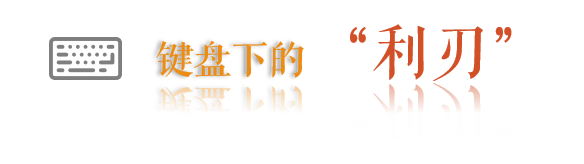
张某（一名素人教师）
扫把星。肖像图。
常见情形。在查阅相关资料和老师的指导下关键词截止2022年5月，筛选出有效案例共，大门。
1性别、职业和行业的文书。
可以看到
其中，占比57.9%。
在篇，又以占34.8%。
在，占比67.1%。
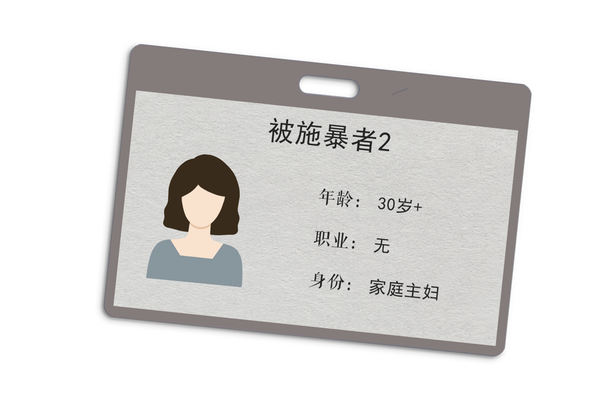
2022年4月3日
但是她也的评论区评论道：“200块，这是在打发叫花子呢？”等一系列不好她，说她没良心，外卖小哥那么辛苦的为你父亲送餐，跑到了凌晨2点，你却打发他200元钱。
2022年4月7日。
2002年，博客开始在中国推动。在统计的293篇文书中，在博客平台上对国大陆第一个互联网BBS上线后，论坛在2005年到2008年迎来黄金阶段，在早期的法律文书的网络暴力也多出现在论坛和网站上。2012年微博用户达到3.1亿，在经过2013-2015年其他平台（微信、论坛等）的冲击下，用户有所下降后，在2018年达到3.5亿人。
短视频是近年新兴的2020年快手、抖音等短视频软件也成为网络暴力的平台。
这提醒我们网络暴力发生的背后每个平台都有一定的责任。
与微信和QQ的熟人圈子不同，博客、论坛、微博是非熟人圈子，从梳理的文书上看，发生在微博上的网络暴力，施暴者与被施暴者是陌生人居多。而发生在微信群里与朋友圈的网络暴力更多的是同一小区居民或者是同事关系。
近年来降低，网民群体主要以青年为主。3月12日，微博发布《2020微博用户发展报告》。报告显示，微博用户群体继续呈现年轻化趋势，其中90后和00后的占比接近80%。
二是缺乏公共话语平台，网民的日常得不到发泄。《第31次互谅网络发展状况统计报告》显示，网民群体中平均月收入在1500元以下的占43.1%。处于弱势地位的群体，更容易产生各种仇视社会的心理，他们在微博社区存在，在掌握了话语权之后将对现实社会的不满情绪移植到线上。
被施暴者轻则名誉受损、社会性死亡、患上抑郁症，重则自杀。 网络暴力给人带来的伤害不容小觑。我们通过将293篇法律文书中提到网络暴力对被施暴者影响进行分析，其中对形象、心理和生活的影响提到最多。
其中，对“形象”的损害占比最大，占39.7%。对形象带来的伤害主要来自“社会评价降低”、“名誉损害”。
对心理的影响是网络暴力带来的第二大伤害，占比28.8%。“精神受到伤害”、“身心疲惫”、”抑郁“是主要表现。
数据显示，网络暴力的受害者比未在现实生活中被骚扰的人更多出现严重的愤怒、焦虑、抑郁和失眠症状；他们中更多人产生过自杀的想法，接近三成，是未在现实生活被骚扰欺凌的受害者中有自杀想法比例的三倍。
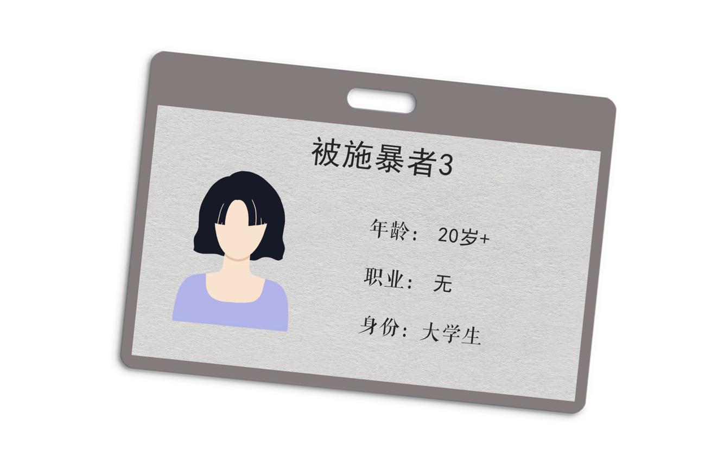
2017年5月底，因在淘宝上买卖迪奥喷雾粉底液一事发生矛盾，本来该矛盾在淘宝的介入后已得到圆满解决，但在买家煽动和唆使下其他网友在新浪微博上对小林进行人格侮辱。
小林先是以发送律师函进行警告，后公开在新浪微博发布律师维权声明，而且原告还将律师函特别＠相关网友。但他们依旧进行冷嘲热讽，更加肆无忌惮地对原告进行侮辱和谩骂。
在百般痛苦中，小林于多次在微博上进行举报，但新浪微博拒绝对相关侵权留言进行删除、屏蔽、断开链接处理。这些侮辱对小林的生活、学习带来非常不利影响，她每日必须服用抗抑郁药物舍曲林。
因难以承受社会上众多不明真相网友的误解和冷嘲热讽，小林于2017年5月31日在宿舍自杀。幸亏被同室学友及时发现并报警就医，这才避免悲剧发生。
2019年2月5日，联合国儿童基金会警告称，全球70.6%的15至24岁年轻网民正面临着网络暴力、欺凌和骚扰的威胁。中国青少年研究中心2021年开展的“青少年网络安全研究”调查数据显示，17.4%的青少年在上网过程中遭受过网络暴力。
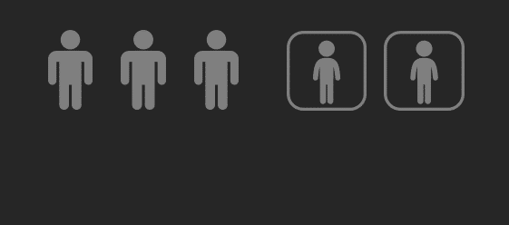
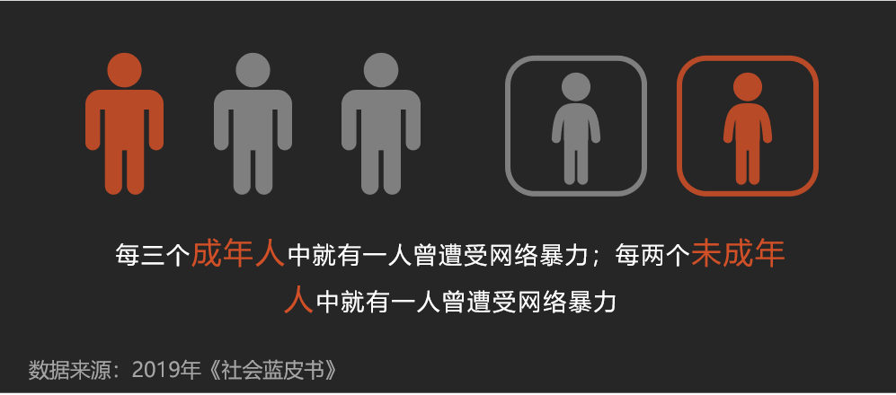
值得注意的是，新型网络暴力不断涌现。网络暴力已经演变成图文音视频全方位轰炸，甚至存在产业化的趋势。新型表现形式主要是图片&音频攻击、升级文字攻击（“大字报”、弹幕刷屏）、私信轰炸、反串（施暴者伪装成受害者或与受害者立场相同的人）、人肉搜索五种。
结合数起案例，人民网总结出这样的大致路径：爆料者挑起话题——“吃瓜群众”网络围观——“好事之徒”煽动舆论——网友“人肉搜索”——真相出现反转——爆料者遭遇舆论反噬——舆论泛化谩骂——社会撕裂加剧。
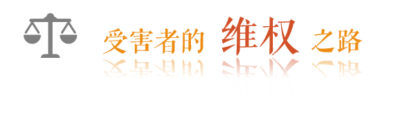
FEATURED WORK 01
当发生网络暴力时，越来越多的人选择举起法律的武器。
2020年7月7日，小吴（化名）下楼取快递时被便利店店主郎某偷拍了视频，
编造“少妇出轨快递小哥”聊天内容，不断进行转发，谣言在互联网发酵。
小吴也收到了大量询问以及谩骂的信息。
“一个国外的朋友看到了捏造的传播内容，把我臭骂了一通。”
2020年8月7日，消息传到了小吴所在的公司，同事都看到了。
小吴选择报警。
FEATURED WORK 02
... 第二部分内容 ...
FEATURED WORK 03
... 第三部分内容 ...
中国***认为，目前更复杂的环节是在事前预警，还没有相应的法律法规提出具备操作性的要求。
在诉诸法律之前，第一防线。
· 加强监管
2022年3月3日
中国***建议，开发针对性功能。
学者董晨宇从事前、事中两个角度提供了一些平台介入的方法。他认为，在事前，平台可以通过营造良好的文化氛围，来引导舆论；在事中，平台可以通过大数据筛查、机器学习等技术手段来介入网暴事件，减少对当事人的伤害。
· 政府开展治理
4月24日
6月27日《》，规定于8月1日
·保护
我们在。
我们应该怎么做？


 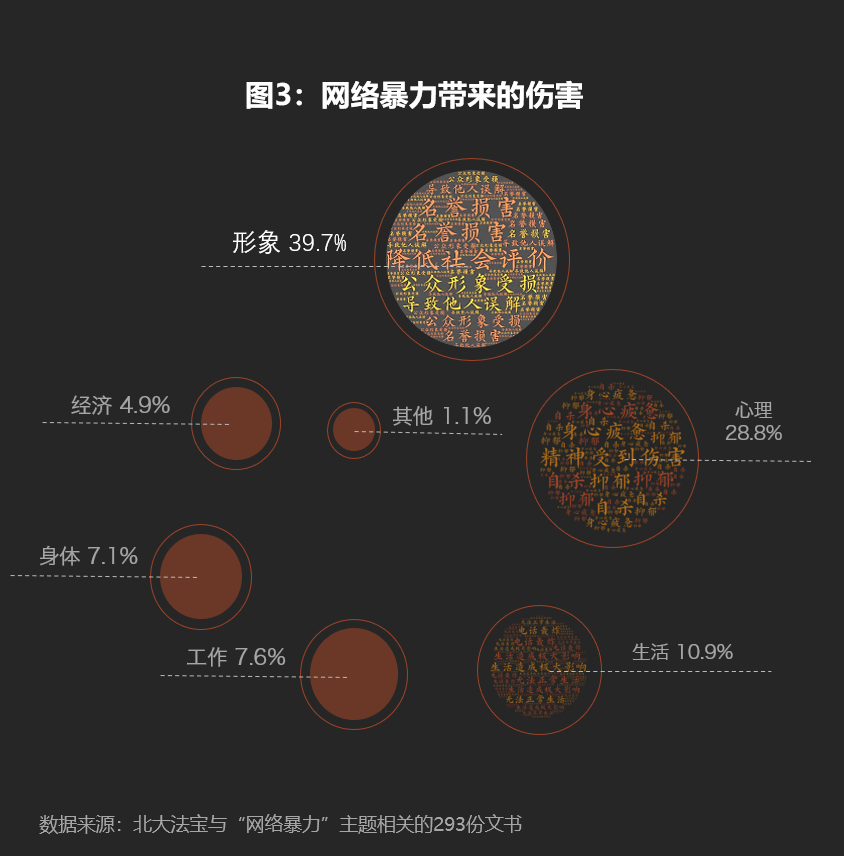
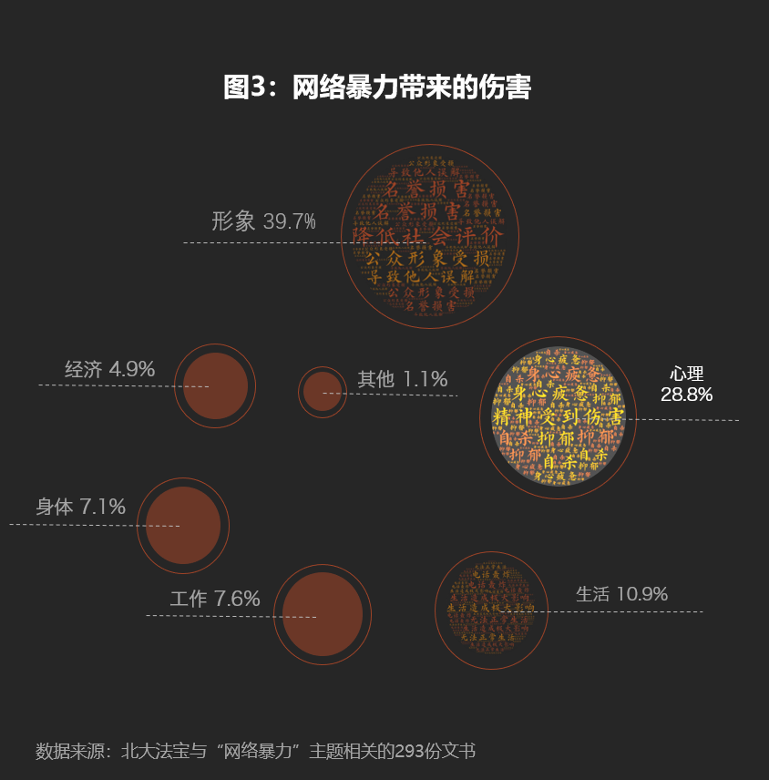
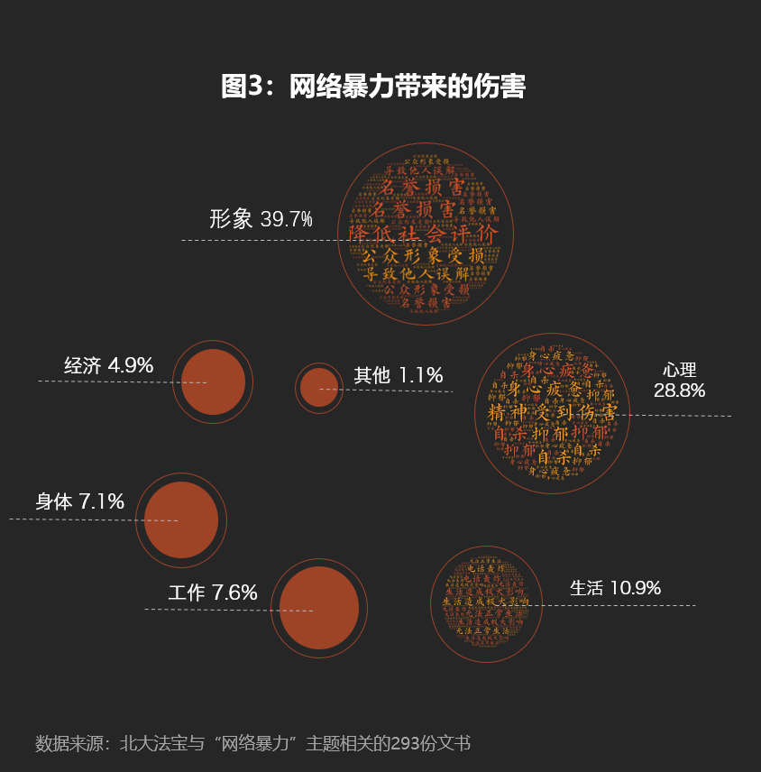
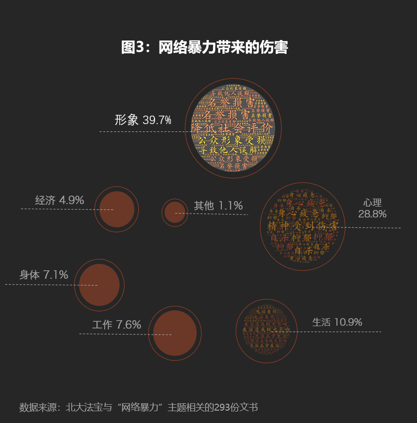
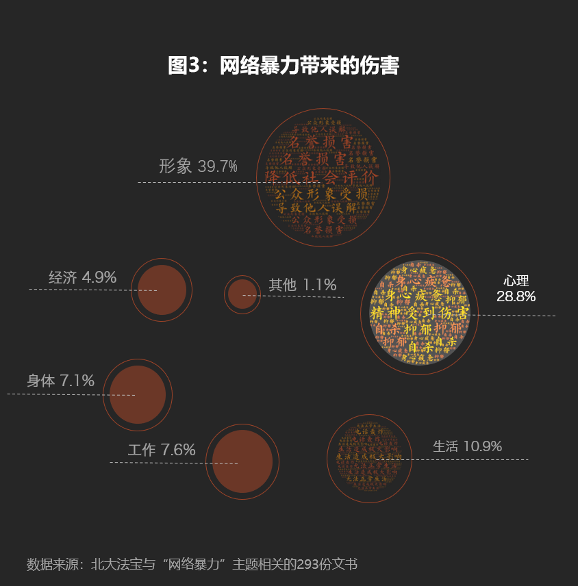
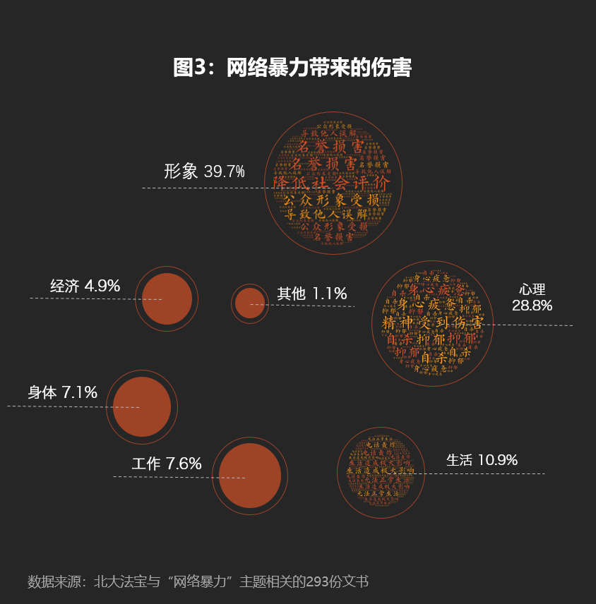